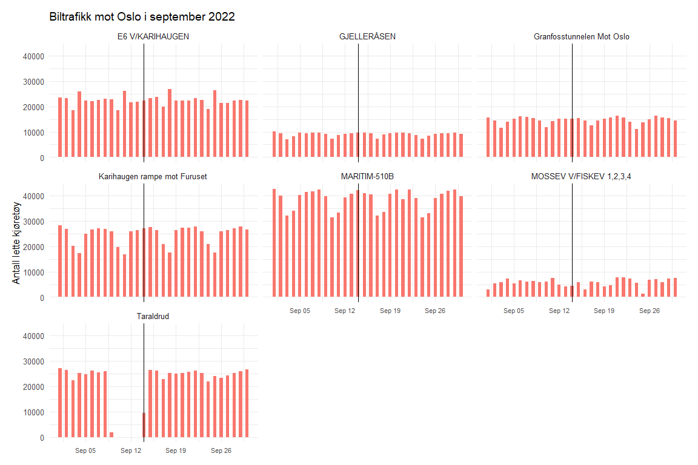
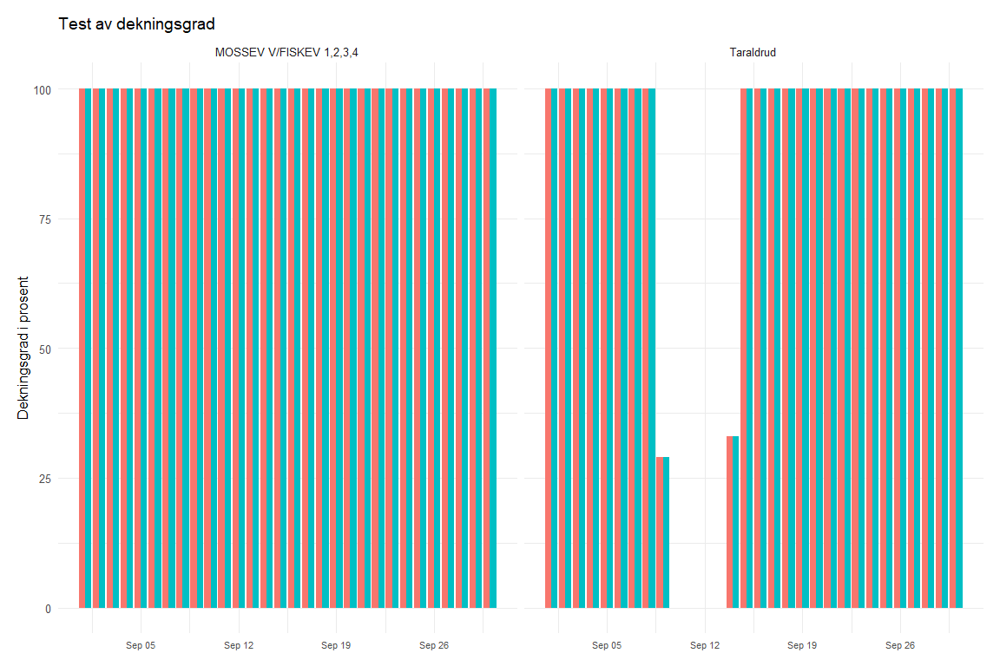
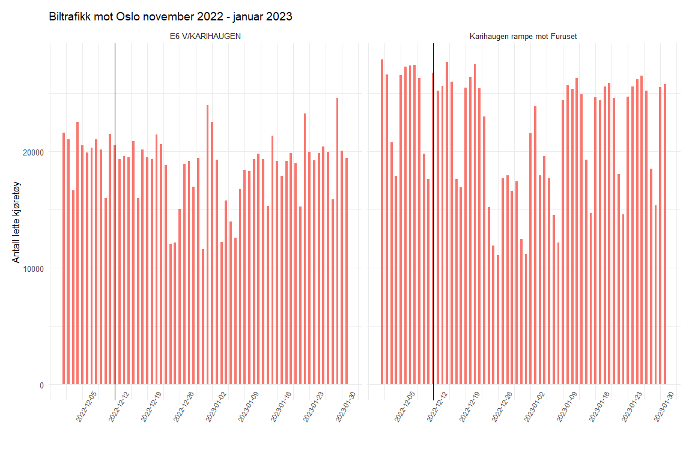
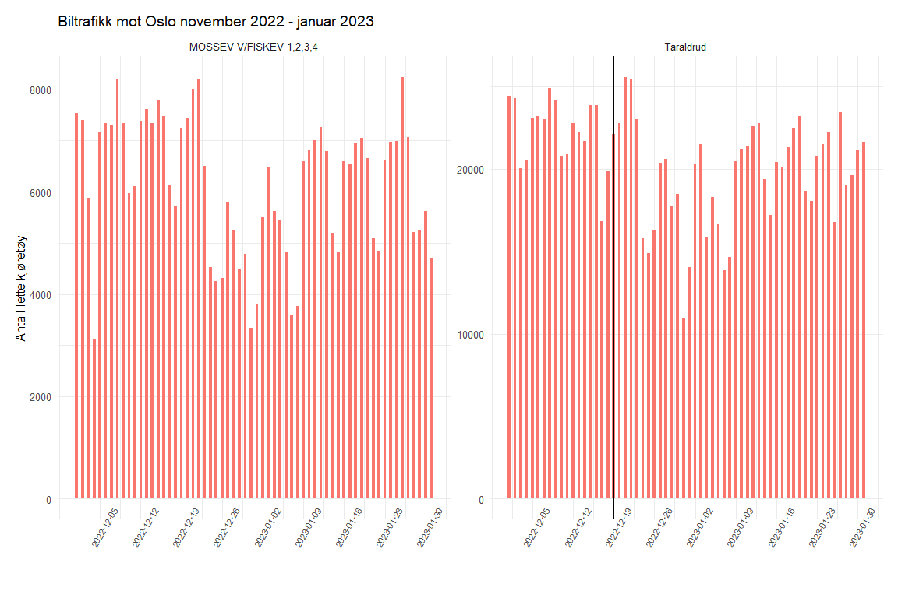

Formålet med analysen
Formålet med analysen har vært å undersøke om det er mulig å se kortsiktige endringer i biltrafikken i etterkant av store hendelser på jernbanen. Logikken bak denne forventningen er følgende: store hendelser som forårsaker forsinkelser og innstillinger og får mye omtale i media kan skade jernbanens omdømme og føre til lavere tillit til tog som transportmiddel, som i sin tur kan føre til at folk velger bilen i hverdagen.
Data
Data om biltrafikkmengde finnes hos Statens vegvesen og kan innhentes som csv-fil etter valgte kriterier som strekning og tidsperiode: trafikkdataportalen.
Passerende biler registreres kontinuerlig eller periodisk, avhengig av målested. Til analysen ble det valgt kontinuerlig registrering som foregår døgnet rundt hele året. For motorkjøretøy registreres blant annet lengde og kjøretøyklasse. 5,6 meter er skillet mellom lett og tung kjøretøy, men det finnes flere intervaller over 5,6 meter. Det registreres også kjøreretning.
Trafikkmengde beregnes slik:
- Timetrafikk – antall kjøretøy i klokketimen
- Døgntrafikk – antall kjøretøy i døgnet, dvs. summen av timetrafikken
- Gjennomsnittlig døgntrafikk – gjennomsnitt per måned, sesong eller år
Registreringen overføres i sanntid til Statens vegvesens trafikkdatasystem hvor registreringene blir kontrollert og aggregert. Aggregerte data blir tilgjengelig i trafikkdataportalen to til tre timer etter, så dette er helt ferske data. To datasett ble lastet ned til denne analysen: trafikkmengdeOslo2022.csv inneholder observasjoner av døgntrafikk for hele 2022 ved de utvalgte målepunktene, desemberkatastrofer.csv inneholder observasjoner av døgntrafikk mellom 1. november 2022 og 31. januar 2023 ved de samme målepunktene. Begge datasettene består av data samlet på følgende innfartsårer inn til og ut av Oslo:
- Fra sør - Taraldrud og Mosseveien v/Fiskevollbukta 1, 2, 3, 4
- Fra øst - E6 v/Karihaugen og Karihaugen rampe mot Furuset
- Fra nord - Gjelleråsen
- Fra vest - Maritim-510B og Granfosstunnelen mot Oslo
Oslo er valgt av hensyn til tre hendelser som forårsaket store avvik på jernbanen og var mye omtalt i media: jordfeil på Oslo S 14.09.2022, kjøreledning som falt i Romeriksporten 12.12.2022 og stenging av Follobanen 19.12.2022. Målepunktene er valgt som mulige innfartsårer til Oslo for folk som har toget som et reelt alternativ til bil der de bor.
Analyse
Denne siden og den engelske versjonen er begge generert fra samme R Markdown-kilde. Et params$lang-argument styrer om plottitler og akseetiketter vises på norsk eller engelsk, via en liten hjelpefunksjon:
t <- function(no, en) if (params$lang == "en") en else noDatasettene inneholder informasjon om kjøreretning som ble omkodet for enkelt å skille mellom trafikken mot byen og fra byen ved hvert målepunkt:
oslo <- read.csv("trafikkmengdeOslo2022.csv", header = TRUE,
encoding = "latin1", sep = ";") %>%
clean_names()
oslo$dato <- as.Date(oslo$dato)
oslo[15:22] <- sapply(oslo[, 15:22], as.numeric)
oslo[oslo == 0] <- NA
df_oslo <- oslo %>%
filter(!felt == "Totalt") %>%
filter(grepl('Totalt', felt)) %>%
mutate(felt = ifelse(
felt == "Totalt i retning Oslo" |
felt == "Totalt i retning Oslo" |
felt == "Totalt i retning Oslo" |
felt == "Totalt i retning OSLO" |
felt == "Totalt i retning Karihaugen" |
felt == "Totalt i retning Oslo Grense" |
felt == "Totalt i retning Furuset",
"Mot byen", "Fra byen"))Av data i datasettene ble det laget søylediagrammer med innlagt vertikal linje på hendelsesdato. Antakelsen var at dersom store hendelser på jernbanen forårsaker en flukt fra bane til bil, ville det være synlig som oppgang i biltrafikken i dagene eller ukene umiddelbart etter hendelsen. Dette ble først testet på jordfeilen på Oslo S den 14. september 2022. Kun lette kjøretøy ble plottet, for å isolere privatbilister i størst mulig grad.
df_oslo %>%
filter(between(dato, as.Date('2022-09-01'), as.Date('2022-09-30'))) %>%
filter(!(felt == "Totalt")) %>%
filter(!(felt == "Fra byen")) %>%
select(navn, dato, felt, x_5_6m) %>%
ggplot(mapping = aes(x = dato, y = x_5_6m, fill = felt)) +
geom_bar(stat = "identity", position = "dodge", width = 0.5) +
facet_wrap(~navn, scales = "fixed") +
geom_vline(xintercept = as.numeric(as.Date("2022-09-14"))) +
theme_minimal(base_size = 12) +
labs(title = t("Biltrafikk mot Oslo i september 2022",
"Car traffic toward Oslo, September 2022"),
y = t("Antall lette kjøretøy", "Number of light vehicles"))
Grafen viser at biltrafikken mot byen har et tydelig regelmessig mønster som ikke synes å være brutt etter jordfeilen på Oslo S 14. september 2022. Uregelmessigheter ved Taraldrud er forårsaket av manglende data grunnet lav dekningsgrad. Dekningsgrad angir hvor mye av data som har god nok kvalitet. En dekningsgrad på 50% betyr at man bare har data fra 50% av perioden og at den reelle trafikkmengden derfor er større. Test av dekningsgrad ved Taraldrud viser lave eller manglende verdier av variabelen dekningsgrad i en periode rundt 12. september. Mosseveien ved Fiskevollbukta ble også testet på grunn av forholdsvis uregelmessig trafikkmønster, men ingen utfordringer med dekningsgrad ble funnet. Trafikkvolumet der er heller ikke stort og trafikkmønsteret synes ikke å være påvirket av jordfeilen. Testgrafen er slik:

Samme opprydding- og plottekode ble kjørt på nytt for de to hendelsene i desember, denne gangen på datasettet fra november 2022 – januar 2023 og med andre målepunkter og hendelsesdatoer, så koden gjentas ikke her — kun de resulterende grafene. Etter plotting av data etter hendelsen med kjøreledning i Romeriksporten 12. desember 2022 og stenging av Follobanen 19. desember 2022 er konklusjonen den samme: Det er ikke mulig å påvise en økning i biltrafikken i etterkant. En mulig forklaring er at toget står for en veldig liten del av transportarbeidet i Oslo i forhold til biltrafikken, men dette blir bare en gjetning uten en sammenligning av alle transportmidler, inkludert buss og kanskje sykkel, selv om tallene for sykkel muligens er veldig små. En annen utfordring knyttet til data for denne perioden er at hendelsene oppstod kort tid før jul. Den variasjonen man finner i trafikkmønsteret er nedgang i trafikken på grunn av juleferie.
Graf kjøreledning:

Graf Follobanen:

Konklusjon
Den observerte regelmessigheten i biltrafikken tyder på at det muligens er andre grunner enn utilstrekkelig togtilbud til at folk kjører bil, og de som eventuelt velger å kjøre bil på grunn av lav tillit til togtilbudet etter store hendelser er for få til å synes i data. Effekten av store hendelser på jernbanen dempes også sannsynligvis videre av bruk av hjemmekontor.
Data fra Statens vegvesens trafikkdataportal; visualisert med ggplot2. Se biltrafikk_etter_hendelser.Rmd for fullstendig, kjørbar kildekode.